Is guide mein photos ke saath step by step bataya gaya hai: login kaise karein, product kaise add karein, aur order aaye to kya karein. Sab kuch mobile phone se ho jata hai.
Dashboard ka addressvendor.karachimartonline.com
Help ke liye+92 371 2104790
Emailinfo@karachimartonline.com
1. First time loginpage 2
2. Dashboard aur menupage 3
3. Naya product kaise add kareinpage 4–7
4. Product edit kareinpage 8
5. Order aaye to kya kareinpage 9
6. Courier select kareinpage 10
7. Apna store setup kareinpage 11
Banner aur logo: size aur jagahpage 12
8. Paymentspage 13
FAQs aur helppage 14
Karachi Mart Online · Vendor guide1
Section 1
First time login
KMO team aap ka account banati hai aur aap ko 1 email bhejti hai. Us email ke link se aap apna password khud set karte hain.
Step 1
Email se password set karein
Apni Gmail open karein. Karachi Mart Online ki email search karein.
Email mein button par tap karein. 1 page open hoga.
New password 2 dafa type karein aur save karein. Aap direct apne dashboard mein pohanch jayenge.
Email nahi mili?Gmail mein Spam aur Promotions folder check karein. Link 24 hours tak valid hai. Expire ho jaye to KMO team ko call karein, woh new link bhej denge.
Step 2
Next time login
Phone ke browser (Chrome) mein vendor.karachimartonline.com open karein.
Email aur Password type karein.
Sign in par tap karein.
Password bhool gaye?Forgot password? par tap karein aur apni email type karein. New password set karne ka link email par aa jayega.
Easy tipChrome mein page open karke ⋮ menu se Add to Home screen kar lein. Phir dashboard app ki tarah 1 tap se open hoga.
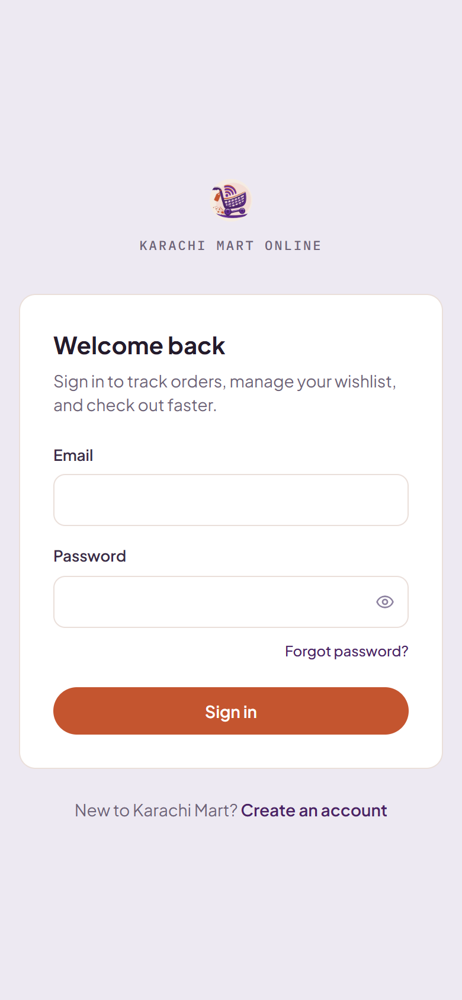
Login page
Karachi Mart Online · Vendor guide2
Section 2
Dashboard aur menu
Login ke baad sab se pehle Overview open hota hai. Upar left side par ☰ (3 lines) button se menu open hota hai.
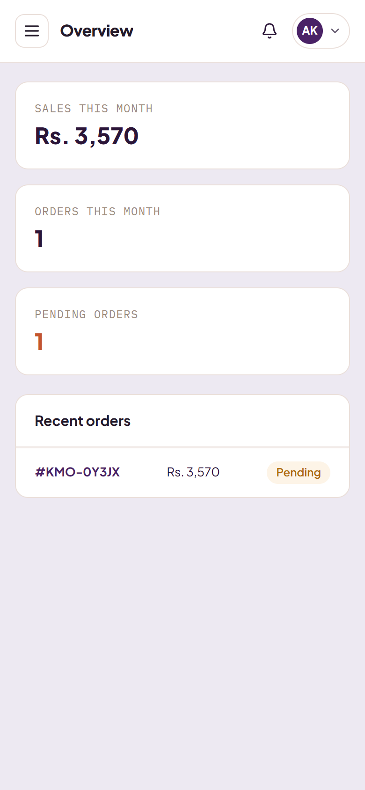
Overview
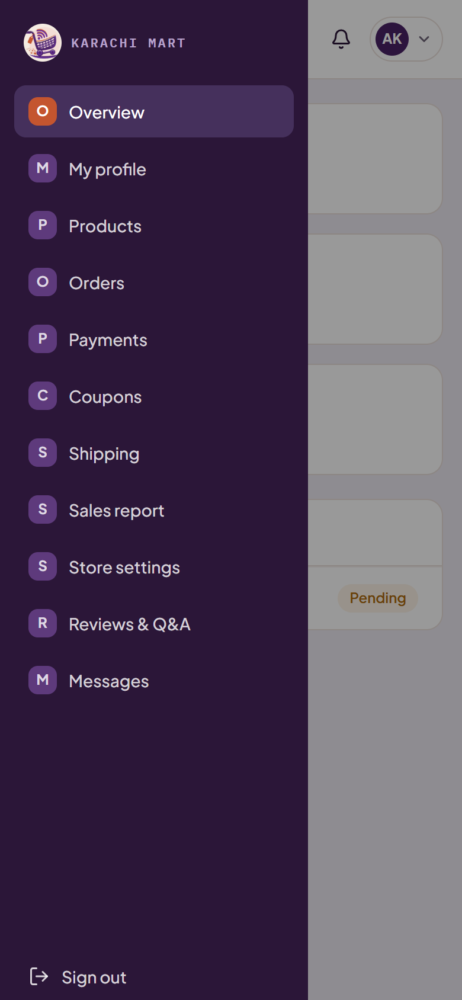
☰ Menu
Sales this month: is month kitne Rupees ki sale hui.
Pending orders: jin orders par abhi kaam karna hai.
Recent orders: kisi order par tap karein to details open hongi.
Products: product add aur edit karna
Orders: customer ke orders
Payments: aap ki payments
Store settings: name, logo aur banner
Karachi Mart Online · Vendor guide3
Section 3
Naya product kaise add karein
Product ka form 4 parts mein hai. Upar se neeche fill karte jayein aur end mein 1 dafa Save product par tap karein. Bas.
Step 1
Products open karein aur "+ Add product" par tap karein
Menu ☰ se Products open karein.
Upar wale bare orange button + Add product par tap karein.
Isi page par aap ke saare products ki list hoti hai. Har product ke saath Edit aur Delete hai.
Yaad rakheinForm ke 4 parts hain: 1. Product details, 2. Photos, 3. Sizes & colours, 4. Stock. Agle pages par har part ki photo hai.
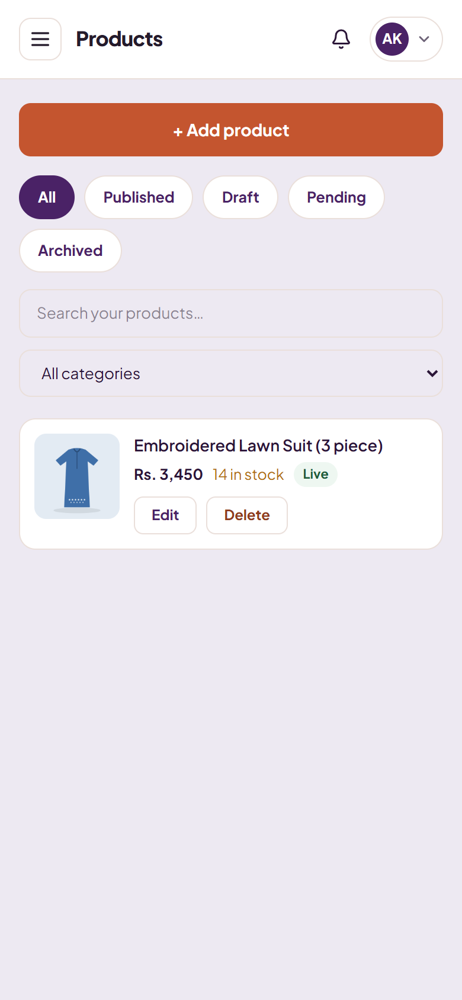
Products page
Karachi Mart Online · Vendor guide4
Step 2 · Part 1
Name, category aur price
Product name: product ka clear aur simple name likhein, jaise "Printed Cotton Kurti".
Category: jo button aap ke product se match karta ho, us par 1 tap karein. Woh purple ho jayega aur neeche Selected likha aa jayega.
Selling price: jis price par sell karna hai (sirf number, jaise 2200).
Original price: sirf tab likhein jab sale lagani ho. Website par yeh price cut (line ke saath) show hoti hai. Optional hai.
Gallery se 1 ya zyada photos select karein, ya camera se new photo lein.
Pehli photo Main hoti hai. Doosri photo ko main banana ho to Make main tap karein.
Galat photo remove karni ho to corner wala × tap karein.
Achhi photo ke liyeDaylight mein, plain white wall ya bedsheet ke saamne photo lein. Kam se kam 1 photo zaroori hai.
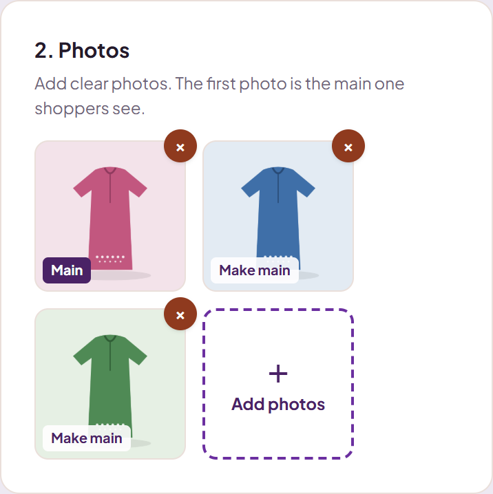
Part 2: Photos
Step 4 · Part 3
Size ya colour (agar hon)
Size, Colour ya Other select karein.
Pehle box mein size/colour type karein, jaise Medium ya Red.
Quantity mein pieces type karein.
+ Add par tap karein. Next size isi tarah add karein.
Product 1 hi tarah ka hai (koi size ya colour nahi) to yeh part skip kar dein.
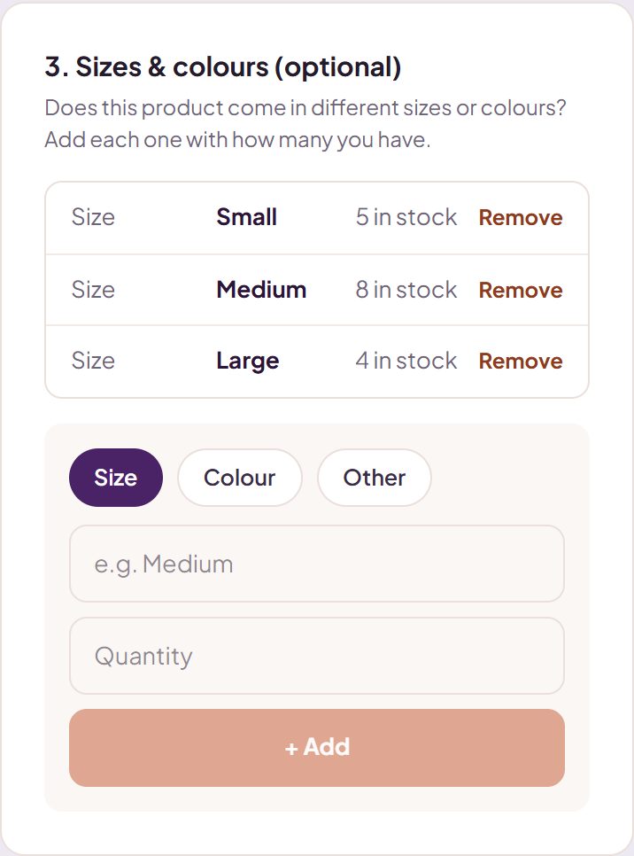
Part 3: Sizes & colours
Karachi Mart Online · Vendor guide6
Step 5 aur 6
Save karein aur approval ka wait karein
Stock: sizes daale hain to automatic total ho jata hai (5 + 8 + 4 = 17). Warna total quantity likhein.
Send for approval: ON (orange) rehne dein.
End mein Save product par tap karein aur photos upload hone tak wait karein.
Save ke baad product Pending mein hota hai: KMO team check kar rahi hai.
Approve hote hi Live ho jata hai aur website par show hota hai.
Approval ki notification bell icon 🔔 mein aati hai.
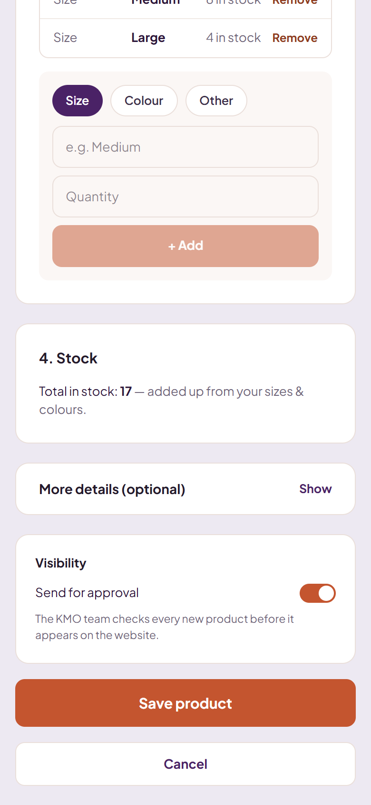
Form ka last part
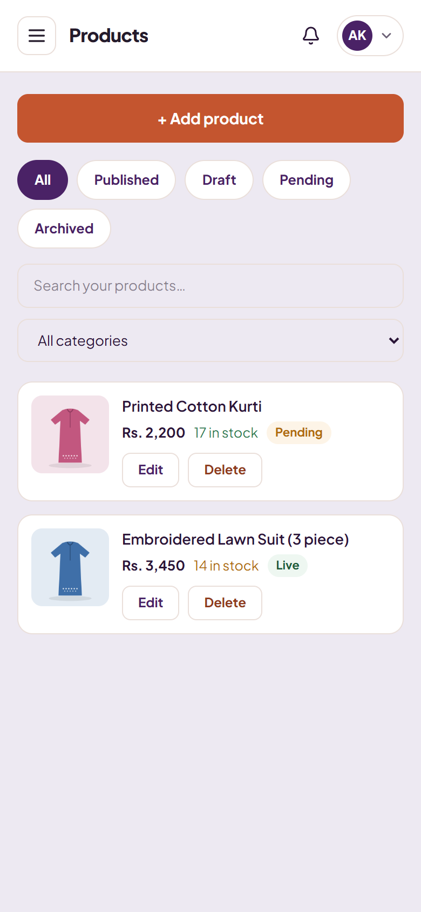
New product Pending, purana Live
Kuch miss ho gaya?Name, category, price ya photo miss ho to Save ke upar red colour mein message aayega. Woh fill karke dobara Save karein.
Karachi Mart Online · Vendor guide7
Section 4
Product edit karein
Price badalni ho, stock khatam ho gaya ho, ya nayi photo lagani ho: sab Products page se hota hai.
Price ya stock badalna: product ke saath Edit par tap karein, number change karein, phir Save product.
1 size khatam ho gaya: Edit mein us size ke saath Remove tap karein, ya us ki sahi quantity dobara add karein.
Product remove karna:Delete par tap karein. Confirm karne ke liye 1 dafa aur poocha jayega.
Product search karna: upar Search your products mein name type karein, ya category select karein.
Product status ka matlab
Status
Matlab
Live
Website par hai, customers buy kar sakte hain.
Pending
KMO team check kar rahi hai. Abhi website par nahi.
Draft
Save kiya lekin approval ke liye nahi bheja ("Send for approval" OFF tha).
Archived
Product remove kar diya gaya hai.
Karachi Mart Online · Vendor guide8
Section 5
Order aaye to kya karein
Naya order aate hi bell icon 🔔 par notification aati hai. Menu ☰ se Orders open karein aur order number (#KMO-…) par tap karein.
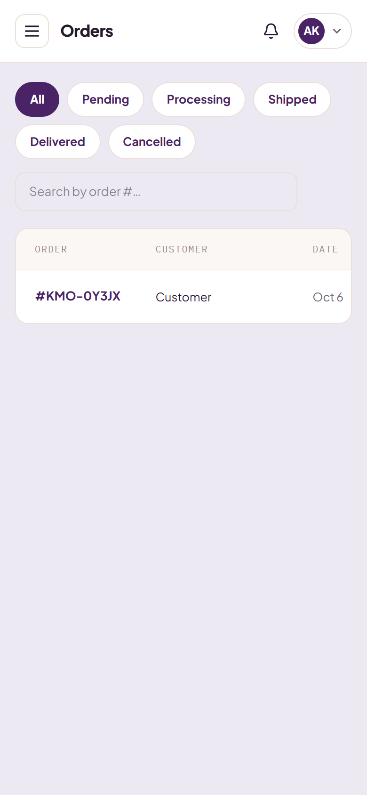
Orders page
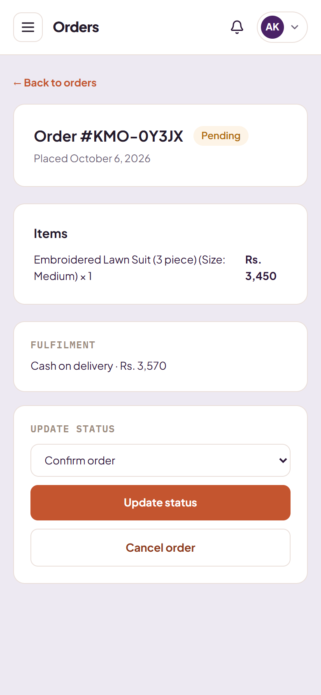
Order details
Har step par list se next status select karein aur Update status par tap karein:
Confirm order: order check kar liya, stock available hai.
Mark as processing: pack kar rahe hain.
Mark as ready to ship: parcel ready hai.
Mark as shipped: rider/courier ko de diya.
Mark as delivered: customer ko mil gaya.
Stock khatam hai?Order complete nahi ho sakta to Cancel order par tap karein, lekin pehle KMO team ko inform kar dein.
Karachi Mart Online · Vendor guide9
Section 6
Courier select karein
Aap ke orders kis courier se jayenge, yeh Shipping page par select hota hai. Yeh kaam sirf 1 dafa karna hai.
Menu ☰ se Shipping open karein.
Preferred courier mein apna courier select karein, jaise Leopards, TRAX, PostEx ya Courier Fast Service.
Tap karte hi save ho jata hai. Selected courier par orange border aa jata hai.
Neeche Your shipping rates mein us courier ke rates show hote hain: city, weight (kg), fee aur GST/tax.
Kaun sa courier chunein?Jo courier aap ke area se parcel pickup karta ho aur jis se aap pehle kaam kar chuke hon. Courier badalna ho to bas doosre courier par tap kar dein.
"No rates set up yet" likha aa raha hai?Courier ke rates KMO team set karti hai. Yeh message aaye to KMO team ko call karein, woh aap ke liye rates add kar degi.
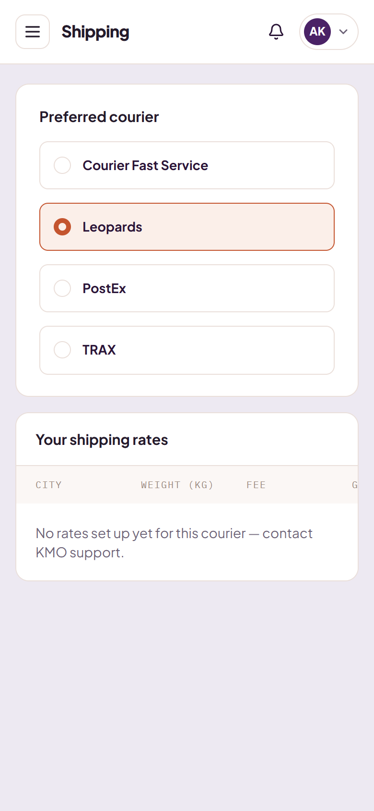
Shipping page
Karachi Mart Online · Vendor guide10
Section 7
Apna store setup karein
Logo aur banner wala store customers ko zyada professional aur trusted lagta hai. Yeh kaam sirf 1 dafa karna hai.
Menu ☰ se Store settings open karein.
+ Logo: apne store ka logo lagayein (square photo behtar hai).
+ Upload banner: 1 wide photo, jaise apne products ki.
Location mein apna area likhein, jaise Gulshan-e-Iqbal.
Store description mein 2 lines likhein ke aap kya bechte hain.
Sab se neeche Save settings par tap karein.
Vacation modeHoliday par ja rahe hon to isay ON karke Save karein. Store page par holiday ka notice lag jata hai. Long holiday ho to KMO team ko bhi bata dein.
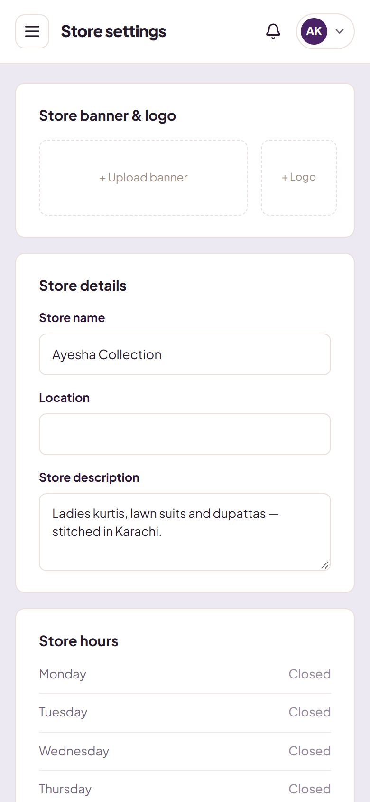
Store settings
Karachi Mart Online · Vendor guide11
Store settings
Banner aur logo: kaisi photo?
Banner aur logo 2 jagah show hote hain: homepage ke "Featured vendors" card par, aur aap ke store page par.
Photo
Size
Type
Banner (+ Upload banner)
1600 × 400 px kam se kam 1200 × 300
Wide (landscape), JPG ya PNG, 2 MB se kam
Logo (+ Logo)
500 × 500 px
Square, JPG ya PNG, 2 MB se kam
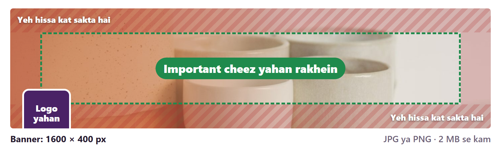
Banner ka safe hissa: important cheez hare dabbe ke andar rakhein
Important cheez beech mein rakhein. Har screen par banner upar-neeche aur sides se thora kat jata hai (diagram mein laal hissa).
Neeche left corner mein aap ka logo aata hai. Wahan koi important cheez na rakhein.
Banner par text ya phone number na likhein. Mobile par banner chhota ho jata hai aur text parha nahi jata.
Saaf, roshan aur apne products wali photo lagayein. Dhundli ya screenshot wali photo na lagayein.
Logo: simple rakhein aur kinaron par thori khaali jagah chhorein, kyunke corners gol ho jate hain.
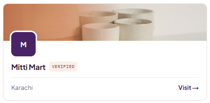
Homepage card
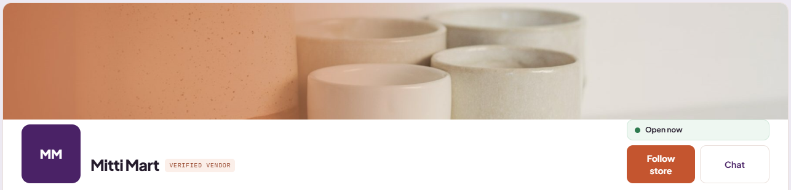
Store page
Karachi Mart Online · Vendor guide12
Section 8
Payments
Delivered orders ki payment yahan jama hoti hai.
Available balance: jo amount aap withdraw kar sakte hain.
Paid to date: ab tak aap ko kitni payment mil chuki hai.
Request a withdrawal: amount likhein (khaali chhor dein to full balance) aur Send request to admin par tap karein. KMO team payment bhej degi.
CommissionKMO aap ki sale par koi commission nahi leta. Membership free trial ke baad Rs. 499 monthly hai. Details isi page par Read the full vendor agreement mein hain.
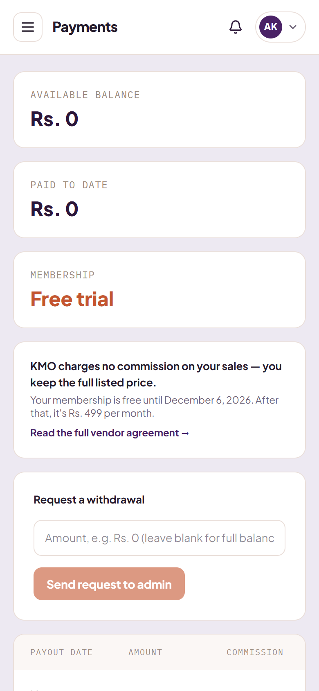
Payments
Karachi Mart Online · Vendor guide13
FAQs
Common questions
Mera product website par show kyun nahi ho raha?
Products page par us ka status check karein. Pending ho to KMO team ki approval ka wait hai. Draft ho to Edit karke "Send for approval" ON karein aur Save karein.
Photo upload nahi ho rahi.
JPG, PNG ya WEBP photo select karein. Internet slow ho to Save ke baad page close na karein, upload complete hone dein.
Save kiya, red colour mein message aa gaya.
Woh batata hai ke kya miss hua hai: name, category, price ya kam se kam 1 photo. Woh fill karke dobara Save karein.
Mujhe apni category nahi mil rahi.
Har group ke end mein "Other ..." ka button hai. Agar aap ka poora group show nahi ho raha, to KMO team ko call karein. Woh aap ke store mein add kar degi.
Parcel kis courier se jayega?
Jo courier aap ne Shipping page par "Preferred courier" mein select kiya hai. Select nahi kiya to Menu ☰ → Shipping se kar lein.
Phone par menu nahi mil raha.
Upar left corner mein ☰ (3 lines) wala button tap karein.
Kya computer se bhi chala sakte hain?
Ji haan. Computer par bhi vendor.karachimartonline.com open karein. Wahan menu hamesha left side par khula rehta hai.
Koi bhi problem ho, hum se baat karein
Call ya WhatsApp karein. Hum aap ko step by step guide kar denge.